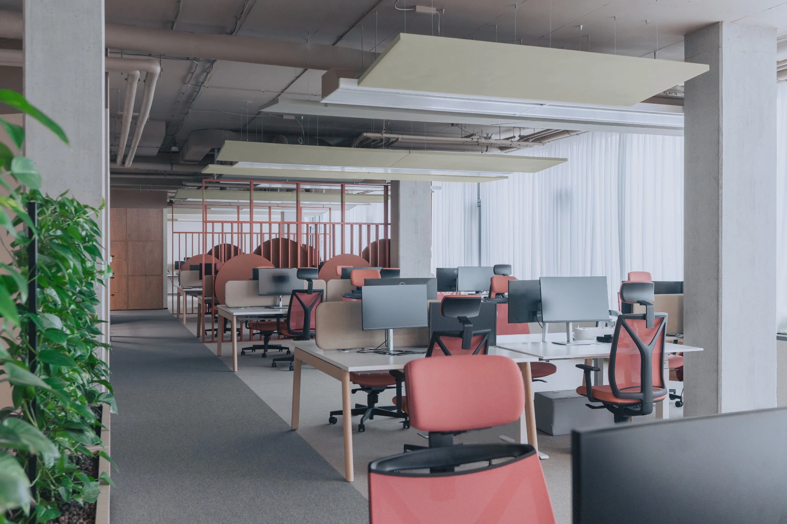
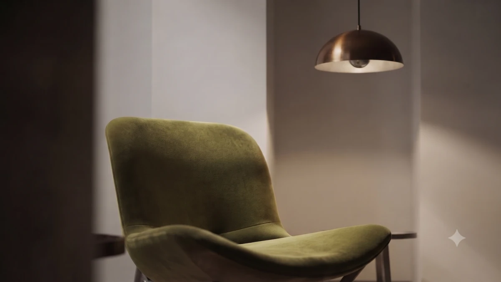
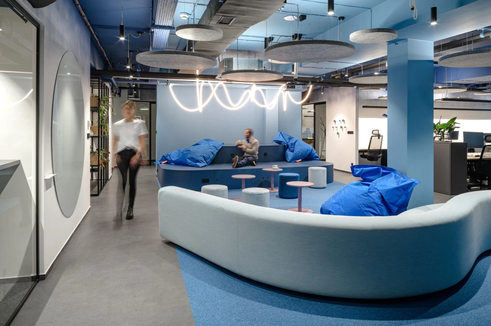

15. 6. 2026

Jeden zaměstnanec v kanceláři potřebuje podle předpisů aspoň 2 m² volné podlahové plochy a 12 m³ vzduchu, což při běžné výšce stropu vychází zhruba na 4 až 5 m². V praxi se české kanceláře navrhují s 8 až 15 m² na osobu včetně zasedacích místností a zázemí. Nové brněnské sídlo Direct pojišťovny, které jsme navrhli a zrealizovali, má 9,8 m² na stálé pracovní místo.
Otázku, kolik metrů na člověka, slyšíme skoro na každé první schůzce. Většinou ve chvíli, kdy firma vybírá nové kanceláře a na stole leží tři nabídky s různou plochou. Odpověď má tři vrstvy: co vyžaduje zákon, co je na trhu běžné a co potřebuje právě vaše firma.
| Úroveň | Plocha na osobu | Zdroj |
|---|---|---|
| Volná podlahová plocha u pracovního místa | nejméně 2 m² | Nařízení vlády č. 361/2007 Sb., § 48 |
| Zákonné minimum podle objemu vzduchu (12 m³ při stropu 2,5 až 3 m) | zhruba 4 až 5 m² | výpočet podle § 46 a 47 téhož nařízení |
| Běžné české kanceláře | 8 až 15 m² | JLL (2020) |
| Kanceláře na začátku 21. století | 10 až 18 m² | JLL (2020) |
| Direct pojišťovna, Brno (2025) | 9,8 m² na stálé místo, 8,7 m² na každé místo včetně hot desků | realizace U1 Space Design |
Plocha na osobu se ve srovnáních obvykle počítá z celé plochy kanceláře včetně zasedacích místností, kuchyněk a chodeb, dělené počtem pracovních míst. Stejně jsme počítali i Direct.
Požadavky na pracoviště stanoví nařízení vlády č. 361/2007 Sb. o ochraně zdraví při práci. Pro kanceláře jsou důležité tři:
| Plocha místnosti | Minimální světlá výška |
|---|---|
| do 20 m² | 2,50 m |
| do 50 m² | 2,60 m |
| 51 až 100 m² | 2,70 m |
| 101 až 2 000 m² | 3,00 m |
| nad 2 000 m² | 3,25 m |
Z objemu vzduchu vychází skutečné minimum. Při stropu 2,7 m potřebuje každý člověk 12 m³ děleno 2,7 m, tedy asi 4,4 m² podlahy. Dodržení požadavků posuzuje krajská hygienická stanice, typicky už při schvalování projektové dokumentace. Doporučené hodnoty pro administrativní prostory dává česká technická norma ČSN 73 5305, se kterou při návrhu pracujeme.
Zákonné minimum ale nikdo nenavrhuje. Je to hranice, pod kterou se nesmí jít, ne cíl.
Nejvíc plochy na osobu spotřebují samostatné kanceláře. Každá má vlastní dveře, příčky a obvykle i místo pro jednání. Open space je na metry úspornější, ale potřebuje k sobě místnosti, kam se dá odejít: focus roomy na soustředěnou práci a telefonáty, menší zasedací místnosti, tichou zónu.
Většina kanceláří, které dnes navrhujeme, je proto kombinace. Otevřený prostor pro týmy, k němu síť menších místností a společné zázemí, kde se lidé potkávají.

Když část lidí pracuje některé dny z domova, firma nepotřebuje stálé místo pro každého. Část míst se sdílí (desk sharing nebo hot desking) a uvolněná plocha se dá využít na místnosti pro spolupráci nebo soustředění.
V Direct pojišťovně je vedle 275 stálých pracovních míst 35 hot desků. Desk sharing jsme navrhovali i pro Ingersoll Rand. Rozhodující je poměr: kolik lidí je v kanceláři v nejsilnější den, ne v průměru.
Direct je projekt, který vyhrál soutěž Kanceláře roku 2025 v kategorii Velké kanceláře. Čísla z něj ukazují, jak se plocha rozdělí v reálném provozu:
| Údaj | Hodnota |
|---|---|
| Celková plocha | cca 2 700 m² (rekonstrukce a novostavba) |
| Stálá pracovní místa | 275 |
| Hot desky | 35 |
| Zasedací a focus místnosti | 24 |
| Kuchyňky | 4 |
| Multifunkční místnost | 1 |
| Plocha na stálé místo | 9,8 m² |
| Zasedací a focus místnosti na 100 míst | zhruba 8 |
Celý projekt najdete v realizaci Direct pojišťovna.
Hrubý odhad: 60 pracovních míst krát 8 až 15 m² dává 480 až 900 m² celkové plochy. Přesné číslo dá až test fit, tedy rozkreslení vaší firmy do konkrétního prostoru. Děláme ho ještě před podpisem nájmu v rámci služby návrh a design kanceláří, takže víte, kolik lidí se do nabízené plochy opravdu vejde. Jak navazuje návrh, stavba i vybavení, popisujeme na stránce kanceláře na klíč.
Běžné české kanceláře mají 8 až 15 m² na osobu včetně zasedacích místností a zázemí (JLL). Zákonné minimum vychází kolem 4 až 5 m². Brněnské sídlo Direct pojišťovny má 9,8 m² na stálé pracovní místo.
Podle nařízení vlády č. 361/2007 Sb. potřebuje zaměstnanec aspoň 2 m² volné podlahové plochy a 12 m³ vzduchu. Místnost do 20 m² musí mít světlou výšku aspoň 2,5 m, takže jednomístná kancelář vychází nejméně na 4,8 m².
Pokud mají všichni stálé místo, zhruba 400 až 750 m² celkové plochy. Při hybridní práci se sdílenými místy může stačit méně. Přesné číslo ukáže test fit konkrétního prostoru.
Ve většině srovnání ano. Bere se celá plocha kanceláře včetně zasedacích místností, kuchyněk a chodeb a dělí se počtem pracovních míst.
Ubývá stálých míst a přibývá sdílených stolů a místností na spolupráci a soustředění. Celková plocha se nemusí zmenšit, mění se hlavně to, k čemu slouží.
Krajská hygienická stanice, typicky už při schvalování projektové dokumentace. Proto je dobré mít plochu na osobu spočítanou dřív, než se podepíše nájem.
Zdroje: nařízení vlády č. 361/2007 Sb., § 46 až 48 a příloha č. 1; JLL v článku TZB-info „Přežije open space koronavirus?“ (3. 5. 2020); realizace Direct pojišťovna, U1 Space Design (2025).
15. 6. 2026

Návod · připravujeme

10. 4. 2026

1. 12. 2025

21. 7. 2025
![[DOPLNIT jméno a roli kontaktní osoby]](../homepage_v08/img/h/63a16559bd.webp)
Spojte se s námi přímo nebo nám na sebe nechte kontakt.
Obchodní oddělení
Další kontakty a adresy najdete na stránce Kontakt.
Napište nám pár vět o projektu a ozveme se zpět.
Děkujeme za vaši zprávu.
Brzy se vám ozveme. [náhled: formulář zatím nic neodesílá]